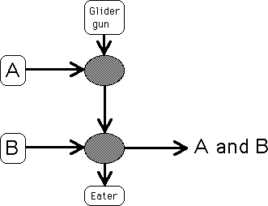

| Suppose A and B are streams of gliders, as usual, a glider denotes a 1, the absence of a glider a 0. |
| We show that if both A and B have a 1 in the current location, then A and B will have a 1 in that location. |
| All other combinations will give a 0 for A and B. |
| Note that since B interacts with the glider stream later than A does, the B stream must lag behind the A stream. |
|  |
Return to the and operation.